Toggle navigation
VINEET KUMAR DOSHI
Home
About
Projects
Contact
Self-Intiated
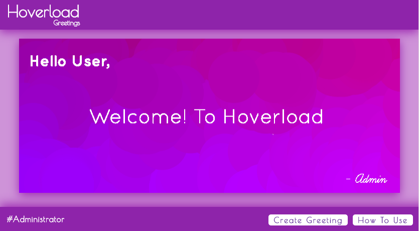
Hoverload Greetings
Customizable and interactive greetings webpage. Users can create personalized greeting and send the URL to recipients.
Tools and Technologies
P5.js | HTML | CSS | JavaScript | JQuery
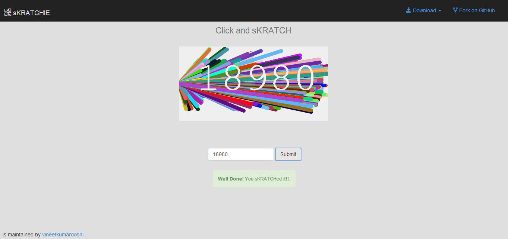
sKRATCHIE Project
An alternate Captcha like code generator, which ask the user to scratch and see the numbers.
Tools and Technologies
Processing.js | HTML | CSS | JavaScript | animate.css
Footer Message Tool
Dynamic linking between Google Spreadsheet and HTML Form Data.
Tools and Technologies
Google Sheets | HTML | CSS | JavaScript | Forms | JQuery
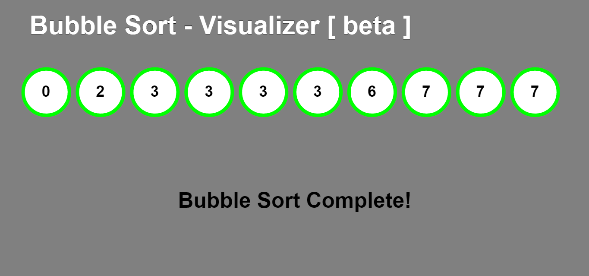
Bubble Sort Visualizer
Visually sorts an array of numbers using bubble sort algorithm.
Tools and Technologies
P5.js | HTML | CSS | JavaScript | JQuery
Academic
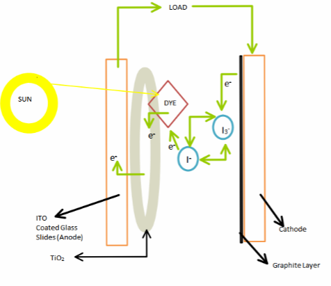
Development of Organic Solar Cells
Developing organic solar cells using Polymer electronics, Nano science and Technology for micro-devices.
University
IIT Guwahati, Assam, India
Supervisor
Dr. Dipankar Bandhyopadhyay
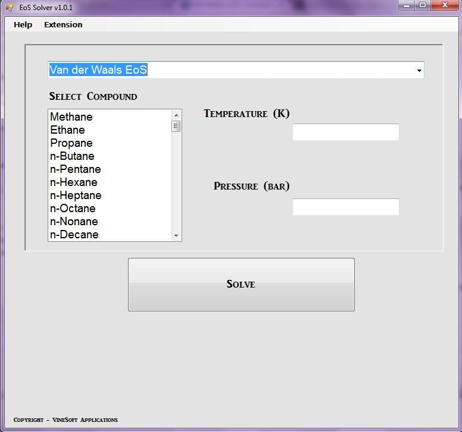
Cubic Equation of States Solver
Solve four different cubic equations of state to obtain three roots of molar volume at a given temperature and pressure.
University
IIT Guwahati, Assam, India
Supervisor
Dr. Amit Kumar
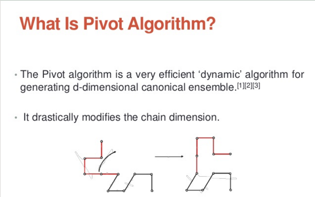
Simulating Pivot Algorithm
The Pivot algorithm is a very efficient 'dynamic' algorithm for generating d - dimensional canonical ensemble. It drastically modifies the chain dimension.
University
IIT Guwahati, Assam, India
Supervisor
Dr. Ashok Kumar Dasmahapatra
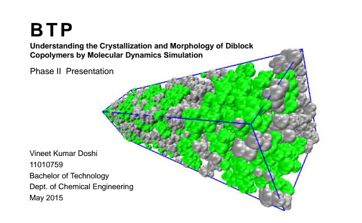
Molecular Dynamics Simulation
To study the glass transition temperature with varying composition ratios of PE-PLLA Diblock Copolymer.
University
IIT Guwahati, Assam, India
Supervisor
Dr. Ashok Kumar Dasmahapatra
Industrial
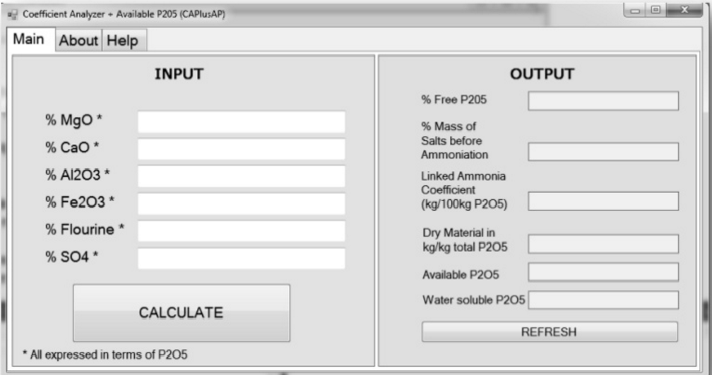
CAPlusAP
Free P
2
O
5
determination software made using Visual Basic. It computes the difference between total P
2
O
5
and free P
2
O
5
.
Industry
Coromandel International Pvt. Ltd.
Supervisior
Er. M. Gnanasundaram
Sr. Product Manager
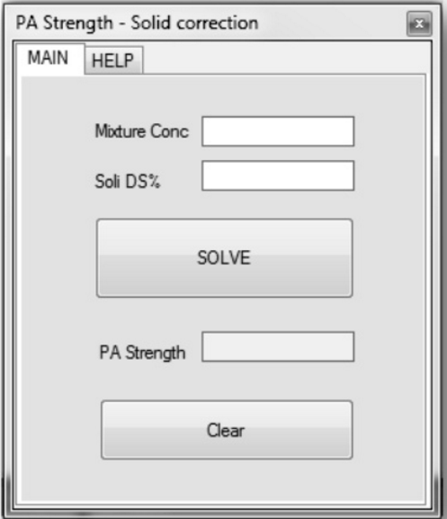
Phosphoric Acid Strength Software
PAS made using Visual Basic, corrects the dissolved solid concentration from the overall mixture concentration.
Industry
Coromandel International Pvt. Ltd.
Supervisior
Er. M. Gnanasundaram
Sr. Product Manager
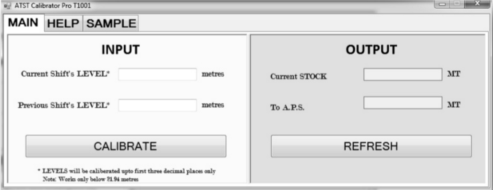
ATST Calibrator
ATST made using Visual Basic, provides the current weight of liquid ammonia and also tells the net of ammonia being sent to APS plant.
Industry
Coromandel International Pvt. Ltd.
Supervisior
Er. M. Gnanasundaram
Sr. Product Manager
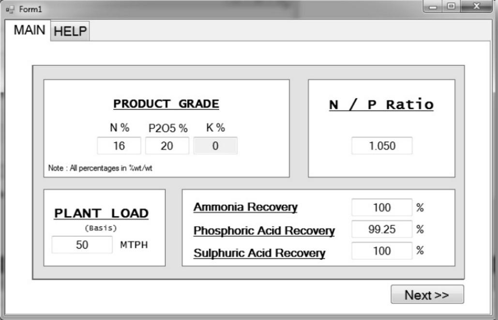
NPK Grade Analyzer
NPK Grade Analyzer made using Visual Basic, predicts the final product and raw material quantities required based on user defined conditions.
Industry
Coromandel International Pvt. Ltd.
Supervisior
Er. M. Gnanasundaram
Sr. Product Manager